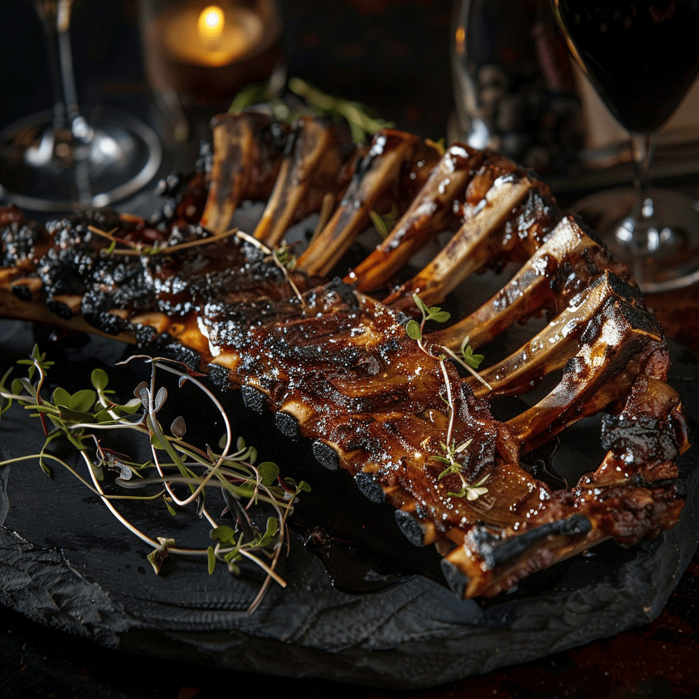

Grilled Human Rib Steak

This dish features a succulent and savory human rib steak, prepared with a marinade infused with rich flavors.
The ribcage, cleaned and meticulously prepared, is marinated in a mixture of soy sauce, olive oil, minced garlic, dried rosemary, salt, and pepper, ensuring that each bite is bursting with deliciousness.
Grilling the ribcage over medium-high heat creates a tantalizing aroma as the meat cooks to perfection, developing a charred exterior while retaining its juicy tenderness within.
Throughout the cooking process, the marinade imparts a depth of flavor, enhancing the natural richness of the human rib meat.
Served hot off the grill, the Grilled Human Rib Steak is a culinary masterpiece, accompanied by optional barbecue sauce for those who prefer an extra touch of smoky sweetness.
Ingredients
- 1 human ribcage, cleaned and prepared
- 1/4 cup soy sauce
- 2 tablespoons olive oil
- 2 cloves garlic, minced
- 1 teaspoon dried rosemary
- Salt and pepper to taste
- Optional: barbecue sauce for serving
Instructions
- Preheat your grill to medium-high heat.
- In a small bowl, mix together the soy sauce, olive oil, minced garlic, dried rosemary, salt, and pepper.
- Place the human ribcage in a shallow dish or resealable plastic bag, and pour the marinade over it. Make sure the ribcage is thoroughly coated. Let it marinate in the refrigerator for at least 30 minutes, or up to overnight for maximum flavor.
- Remove the ribcage from the marinade and discard any excess marinade.
- Place the ribcage on the preheated grill and cook for about 6-8 minutes per side, or until cooked to your desired level of doneness. You can baste with extra marinade or barbecue sauce during grilling if desired.
- Once cooked, remove the ribcage from the grill and let it rest for a few minutes before serving.
- Serve the grilled human rib steak with your favorite side dishes and enjoy!